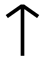

Fehu, “cattle.” Phoneme: F. Meaning: wealth.
Fehu, “cattle.” Phoneme: F. Meaning: wealth. Name: Uruz, “aurochs.” Phoneme: U (long and/or short). Meaning:
strength of will.
Name: Uruz, “aurochs.” Phoneme: U (long and/or short). Meaning:
strength of will. Name: Thurisaz, “Giant.” Phoneme: Th (both soft and hard). Meaning:
danger, suffering.
Name: Thurisaz, “Giant.” Phoneme: Th (both soft and hard). Meaning:
danger, suffering. Name: Ansuz, “an Aesir god.” Phoneme: A (long and/or short). Meaning:
prosperity, vitality.
Name: Ansuz, “an Aesir god.” Phoneme: A (long and/or short). Meaning:
prosperity, vitality. Name: Raidho, “journey on horseback.” Phoneme: R. Meaning: movement,
work, growth.
Name: Raidho, “journey on horseback.” Phoneme: R. Meaning: movement,
work, growth. Name: Kaunan, “ulcer.” Phoneme: K. Meaning: mortality, pain.
Name: Kaunan, “ulcer.” Phoneme: K. Meaning: mortality, pain.
 Name: Gebo, “gift.” Phoneme: G. Meaning: generosity.
Name: Gebo, “gift.” Phoneme: G. Meaning: generosity. Name: Wunjo, “joy.” Phoneme: W. Meaning: joy, ecstasy.
Name: Wunjo, “joy.” Phoneme: W. Meaning: joy, ecstasy. Name:Hagalaz, “hail.” Phoneme: H. Meaning: destruction, chaos.
Name:Hagalaz, “hail.” Phoneme: H. Meaning: destruction, chaos.
 Name: Naudhiz, “need.” Phoneme: N. Meaning: need, unfulfilled
desire.
Name: Naudhiz, “need.” Phoneme: N. Meaning: need, unfulfilled
desire. Name: Isaz, “ice.” Phoneme: I (long and/or short). Meaning: unknown
(the rune poems are ambiguous and contradictory).
Name: Isaz, “ice.” Phoneme: I (long and/or short). Meaning: unknown
(the rune poems are ambiguous and contradictory). Name: Jera, “year.” Phoneme: Germanic J, modern English Y. Meaning:
harvest, reward.
Name: Jera, “year.” Phoneme: Germanic J, modern English Y. Meaning:
harvest, reward. Name: Eihwaz, “yew.” Phoneme: I pronounced like “Eye.” Meaning:
strength, stability.
Name: Eihwaz, “yew.” Phoneme: I pronounced like “Eye.” Meaning:
strength, stability. Name: unknown. Phoneme: P. Meaning: unknown. (Note: the theory that
this rune’s name was “Pertho” is just speculation. No one really knows, because the Viking Age and
medieval sources are too vague.)
Name: unknown. Phoneme: P. Meaning: unknown. (Note: the theory that
this rune’s name was “Pertho” is just speculation. No one really knows, because the Viking Age and
medieval sources are too vague.) Name: unknown (the rune poems are contradictory). Phoneme: Z.
Meaning: protection from enemies, defense of that which one loves.
Name: unknown (the rune poems are contradictory). Phoneme: Z.
Meaning: protection from enemies, defense of that which one loves. Name: Sowilo, “sun.” Phoneme: S. Meaning: success, solace.
Name: Sowilo, “sun.” Phoneme: S. Meaning: success, solace.
Name: Tiwaz, “the god Tiwaz.” Phoneme: T. Meaning: victory,
honor.
 Name: Berkanan, “birch.” Phoneme: B. Meaning: fertility, growth,
sustenance.
Name: Berkanan, “birch.” Phoneme: B. Meaning: fertility, growth,
sustenance. Name: Ehwaz, “horse.” Phoneme: E (long and/or short). Meaning:
trust, faith, companionship.
Name: Ehwaz, “horse.” Phoneme: E (long and/or short). Meaning:
trust, faith, companionship. Name: Mannaz, “man.” Phoneme: M. Meaning: augmentation,
support.
Name: Mannaz, “man.” Phoneme: M. Meaning: augmentation,
support. Name: Laguz. Phoneme: L. Meaning: formlessness, chaos, potentiality,
the unknown.
Name: Laguz. Phoneme: L. Meaning: formlessness, chaos, potentiality,
the unknown. Name: Ingwaz, “the god Ingwaz.” Phoneme: Ng. Meaning: fertilization,
the beginning of something, the actualization of potential.
Name: Ingwaz, “the god Ingwaz.” Phoneme: Ng. Meaning: fertilization,
the beginning of something, the actualization of potential. Name: Othalan, “inheritance.” Phoneme: O (long and/or short).
Meaning: inheritance, heritage, tradition, nobility.
Name: Othalan, “inheritance.” Phoneme: O (long and/or short).
Meaning: inheritance, heritage, tradition, nobility. Name: Dagaz, “day.” Phoneme: D. Meaning: hope, happiness.
Name: Dagaz, “day.” Phoneme: D. Meaning: hope, happiness.